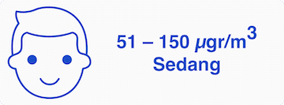
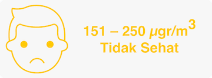
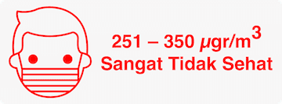

<!DOCTYPE html>
<!-- saved from url=(0085)https://www.bmkg.go.id/kualitas-udara/informasi-partikulat-pm10.bmkg?Lokasi=PEKANBARU -->
<html class="" lang="id">
 <!--<![endif]-->
 <head>
  <meta content="text/html; charset=utf-8" http-equiv="Content-Type"/>
  <title>
   Informasi Konsentrasi Partikulat (PM10) Pekanbaru | BMKG
  </title>
  <meta content="width=device-width, initial-scale=1.0" name="viewport"/>
  <meta content="" name="description"/>
  <meta content="Informasi Cuaca, Citra Satelit Cuaca, Citra Radar, Cuaca Penerbangan, Cuaca Aktual, Cuaca Maritim, Cuaca Pelayaran, Iklim, Kualitas Udara, Gempabumi, Tsunami, Tanda Waktu, Petir" name="keywords"/>
  <meta content="BMKG" name="author"/>
  <meta content="214813409308382" property="fb:app_id"/>
  <meta content="website" property="og:type"/>
  <meta content="BMKG | Badan Meteorologi, Klimatologi, dan Geofisika" property="og:site_name"/>
  <meta content="Informasi Konsentrasi Partikulat (PM10) Pekanbaru | BMKG" property="og:title"/>
  <meta content="http://www.bmkg.go.id/asset/img/logo/bg_BMKG.jpg" property="og:image"/>
  <meta content="image/jpeg" property="og:image:type"/>
  <meta content="1024" property="og:image:width"/>
  <meta content="600" property="og:image:height"/>
  <meta content="" property="og:description"/>
  <meta content="" property="og:url"/>
  <meta content="summary_large_image" name="twitter:card"/>
  <meta content="@infoBMKG" name="twitter:site"/>
  <meta content="@infoBMKG" name="twitter:creator"/>
  <meta content="Informasi Konsentrasi Partikulat (PM10) Pekanbaru | BMKG" name="twitter:title"/>
  <meta content="" name="twitter:description"/>
  <meta content="http://www.bmkg.go.id/asset/img/logo/bg_BMKG.jpg" name="twitter:image"/>
  <meta content="app-id=1114372539" name="apple-itunes-app"/>
  <meta content="app-id=com.Info_BMKG" name="google-play-app"/>
  <link href="./bmkg_files/css" rel="stylesheet"/>
  <link href="https://www.bmkg.go.id/asset/img/favicon.ico" rel="shortcut icon" type="image/x-icon"/>
  <link href="https://www.bmkg.go.id/asset/img/favicon-60@3x.png" rel="apple-touch-icon"/>
  <link href="https://www.bmkg.go.id/asset/img/favicon-60.png" rel="apple-touch-icon" sizes="60x60"/>
  <link href="https://www.bmkg.go.id/asset/img/favicon-60@2x.png" rel="apple-touch-icon" sizes="120x120"/>
  <link href="https://www.bmkg.go.id/asset/img/favicon-60@3x.png" rel="apple-touch-icon" sizes="180x180"/>
  <link href="https://www.bmkg.go.id/asset/img/favicon-76.png" rel="apple-touch-icon" sizes="76x76"/>
  <link href="https://www.bmkg.go.id/asset/img/favicon-76@2x.png" rel="apple-touch-icon" sizes="152x152"/>
  <link href="./bmkg_files/bootstrap.min.css" rel="stylesheet"/>
  <link href="./bmkg_files/jquery.fancybox.min.css" rel="stylesheet"/>
  <link href="./bmkg_files/font-awesome.min.css" rel="stylesheet"/>
  <link href="./bmkg_files/thunderstorm.css" rel="stylesheet"/>
  <link href="./bmkg_files/thrustfault.css" rel="stylesheet"/>
 </head>
</html>
<script type="text/javascript">
 if(window.top!==window.self || top != self){ window.top.location=window.self.location;top.location.replace(location);}
</script>
<style type="text/css">
 .fancybox-margin{margin-right:15px;}
</style>
<body class="header-fixed header-fixed-space bmkg-page">
 <div class="wrapper">
  <div class="container content">
   <div class="row">
    <div class="col-md-8">
     <div class="blog-grid margin-bottom-30">
      <h2 class="blog-grid-title-lg">
       Informasi Konsentrasi Partikulat (PM
       <sub>
        10
       </sub>
       )
      </h2>
      <ul class="list-unstyled img-pm10 clearfix">
       <li>
        
       </li>
       <li>
        
       </li>
       <li>
        
       </li>
       <li>
        
       </li>
       <li>
        
       </li>
      </ul>
      <div class="pm10">
       <div class="margin-bottom-20" id="PEKANBARU">
       </div>
       <script src="./bmkg_files/jquery.min.js" type="text/javascript">
       </script>
       <script id="scriptPEKANBARU" type="text/javascript">
        $(function () {

                            $('#containerPEKANBARU').highcharts({

                                chart: {

                                    type: 'spline'

                                },

                                title: {

                                    style: {

                                        color: '#333', 

                                        fontWeight: 'bold' 

                                    },

                                    text: 'Konsentrasi PM<sub>10</sub> di Pekanbaru'

                                },

                                subtitle: {

                                    style: {

                                        color: '#333', 

                                        fontWeight: 'bold' 

                                    },

                                    text: 'Tanggal:  2019-09-23'

                                },

                                credits: {

                                    enabled: false

                                },

                                xAxis: {

                                    type: 'category',

                                    labels: {

                                        style: {

                                            fontSize: '8px',

                                            fontFamily: 'Roboto, sans-serif'

                                        }

                                    },

                                    title: {

                                        style: {

                                            color: '#333', 

                                            fontWeight: 'bold' 

                                        },

                                        text: 'Jam'

                                    },

                                },

                                yAxis: {

                                    min: 0,

                                    max: 800,

                                    tickInterval: 50,

                                    title: {

                                        style: {

                                            color: '#333', 

                                            fontWeight: 'bold' 

                                        },

                                        text: 'Konsentrasi PM<sub>10</sub> (µgram/m3)'

                                    },

                                    min: 0,

                                    minorGridLineWidth: 0,

                                    gridLineWidth: 0,

                                    alternateGridColor: null,

                                    plotBands: [

                                    { // Baik

                                        from: 0,

                                        to: 50,

                                        color: '#00cc00'

                                    },

                                    { // Sedang

                                        from: 50,

                                        to: 150,

                                        color: '#194cc9'

                                    },

                                    { // Tidak Sehat

                                        from: 150,

                                        to: 250,

                                        color: '#ffc900'

                                    },

                                    { // Sangat Tidak Sehat

                                        from: 250,

                                        to: 350,

                                        color: '#ff0000'

                                    },

                                    { // Berbahaya

                                        from: 350,

                                        to: 800,

                                        color: '#222'

                                    }]        

                                },           

                                legend: {

                                    enabled: false

                                },

                                plotOptions: {

                                    spline: {

                                        lineWidth: 2,

                                        states: {

                                            hover: {

                                                lineWidth: 3

                                            }

                                        },

                                        marker: {

                                            enabled: true

                                        },

                                    },

                                    line: {

                                        lineWidth: 1,

                                        enableMouseTracking: false,

                                        marker: {

                                            enabled: false

                                        },

                                    }

                                },

                                series: [

                                {

                                    name: 'Konsentrasi (PM<sub>10</sub>)',

                                    type: 'spline',

                                    color: '#fff',

                                    data: [

                                            ['0', 683.83],

                                            ['1', 669.07],

                                            ['2', 669.44],

                                            ['3', 662.46],

                                            ['4', 646.70],

                                            ['5', 630.51],

                                            ['6', 593.08],

                                            ['7', 549.57],

                                    ],

                                    dataLabels: {

                                        enabled: false,

                                        enableMouseTracking: true,

                                        color: '#fff',

                                        align: 'center',

                                        rotation: 270,

                                        x: 2,

                                        y: -30,

                                        style: {

                                            fontSize: '13px',

                                            fontFamily: 'Roboto'

                                        }

                                    },

                                    tooltip: {

                                    pointFormat: '{point.y:.2f}  µgram/m3'

                                    }            

                                },{

                                    type: 'line',

                                    color: '#00cc00',

                                    data: 

                                        [25,25,25,25,25,25,25,25,25,25,25,25,25,25,25,25,25,25,25,25,25,25,25,25]

                                }

                                ]        

                            }, function(chart) { // on complete

                                chart.renderer.image('../asset/img/logo/logo-BMKG.png', 30, 10, 35, 35)

                                    .add();  

                            });

                        });
       </script>
       <div data-highcharts-chart="0" id="containerPEKANBARU" style="min-width: 150px; height: 350px; margin: 0 auto">
        <a class_="child" href="hm/test">
         BARU
        </a>
       </div>
       <div class="margin-bottom-30">
       </div>
      </div>
     </div>
    </div>
   </div>
  </div>
 </div>
 <script src="./bmkg_files/jquery.min.js" type="text/javascript">
 </script>
 <script defer="" src="./bmkg_files/masterslider.min.js" type="text/javascript">
 </script>
 <script defer="" src="./bmkg_files/jquery.fancybox.pack.js" type="text/javascript">
 </script>
 <script>
 </script>
 <!--[if lt IE 9]>
	<script type="text/javascript" src="http://www.bmkg.go.id/asset/plugins/respond.min.js"></script>
	<script type="text/javascript" src="http://www.bmkg.go.id/asset/plugins/html5shiv.min.js"></script>
	<script type="text/javascript" src="http://www.bmkg.go.id/asset/plugins/placeholder-IE-fixes.min.js"></script>
<![endif]-->
 <!-- </body></html> -->
 <script src="./bmkg_files/highcharts.js">
 </script>
 <script src="./bmkg_files/exporting.js">
 </script>
 <div id="topcontrol" style="position: fixed; bottom: 5px; right: 5px; opacity: 1; cursor: pointer;" title="Scroll Back to Top">
 </div>
</body>
